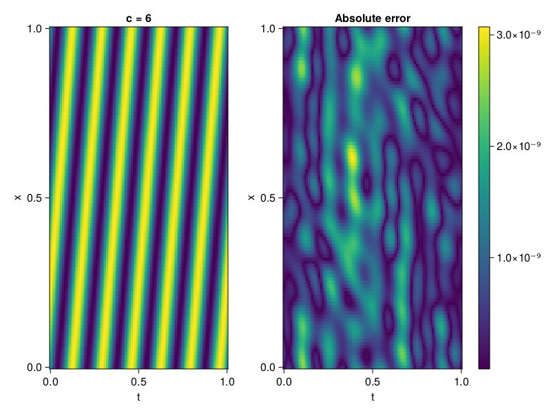

1D Convection Equation
Consider the following 1D-convection equation with periodic boundary conditions.
\[\begin{aligned} &\frac{\partial u}{\partial t}+c \frac{\partial u}{\partial x}=0, x \in[0,1], t \in[0,1] \\ &u(x, 0)=sin(2\pi x) \\ \end{aligned}\]
First we define the PDE.
using ModelingToolkit, Sophon, IntervalSets, CairoMakie
using Optimization, OptimizationOptimJL
@parameters x, t
@variables u(..)
Dₜ = Differential(t)
Dₓ = Differential(x)
c = 6
eq = Dₜ(u(x,t)) + c * Dₓ(u(x,t)) ~ 0
u_analytic(x,t) = sinpi(2*(x-c*t))
domains = [x ∈ 0..1, t ∈ 0..1]
bcs = [u(x,0) ~ u_analytic(x,0)]
@named convection = PDESystem(eq, bcs, domains, [x,t], [u(x,t)])\[ \begin{align} 6 \frac{\mathrm{d}}{\mathrm{d}x} u\left( x, t \right) + \frac{\mathrm{d}}{\mathrm{d}t} u\left( x, t \right) =& 0 \end{align} \]
Imposing periodic boundary conditions
We will use BACON to impose the boundary conditions. To this end, we simply set period to be one.
chain = BACON(2, 1, 8, 1; hidden_dims = 32, num_layers=4)MultiplicativeFilterNet(
filters = BranchLayer(
filter_1 = DiscreteFourierFeature(2 => 32), # 32 parameters, plus 64
filter_2 = DiscreteFourierFeature(2 => 32), # 32 parameters, plus 64
filter_3 = DiscreteFourierFeature(2 => 32), # 32 parameters, plus 64
filter_4 = DiscreteFourierFeature(2 => 32), # 32 parameters, plus 64
),
linear_layers = PairwiseFusion(
Base.Broadcast.BroadcastFunction(*)
layer_1 = Dense(32 => 32), # 1_056 parameters
layer_2 = Dense(32 => 32), # 1_056 parameters
layer_3 = Dense(32 => 32), # 1_056 parameters
),
output_layer = Dense(32 => 1), # 33 parameters
) # Total: 3_329 parameters,
# plus 256 states.For demonstration purposes, the model is also periodic in time
sampler = QuasiRandomSampler(500, 100) # data points
strategy = NonAdaptiveTraining(1 , 500) # weights
pinn = PINN(chain)
prob = Sophon.discretize(convection, pinn, sampler, strategy)
@time res = Optimization.solve(prob, BFGS(); maxiters = 1000)u: ComponentVector{Float64}(filters = (filter_1 = (bias = [0.6102148007459501; -0.09224037405332686; … ; -0.6987041880067648; 0.377580943160836;;]), filter_2 = (bias = [-0.3819285128662396; 0.06634361691981268; … ; -0.878343691418317; 0.6098130231323365;;]), filter_3 = (bias = [1.0198491425783354; -0.09198628220495947; … ; -0.3862333021522726; -0.04476914249163068;;]), filter_4 = (bias = [0.8867607283481306; -0.6445530149838478; … ; -0.2369317575875315; 0.46619200807920813;;])), linear_layers = (layer_1 = (weight = [-0.12100278991081076 0.3124770178073277 … 0.1516015015585254 -0.005850939003536789; -0.25034234217311185 0.2397701031736907 … -0.4274573594302318 0.282084336979091; … ; 0.10845262940766397 -0.023910568114688866 … 0.38851216825832596 -0.1643994494806547; 0.08139689186878535 0.4315992284274303 … -0.01885519083733364 0.09773994735955258], bias = [0.09523631969932601; -0.0010809807566683435; … ; 0.1562699318176127; 0.05373396315121717;;]), layer_2 = (weight = [0.3085721204925485 0.533395791976926 … 0.07350542891936479 -0.2801332596965471; -0.36720317828255317 0.009118235506399 … -0.04056391956811835 -0.07603918539064003; … ; 0.31640255497955355 0.47761409735126376 … 0.2619801871775202 -0.07853964277838693; -0.14604435547092193 -0.016108599664985065 … 0.07790886396508118 0.1878632088289198], bias = [0.08261665269731815; -0.013322439863376199; … ; 0.009725491541940936; 0.060797618273593076;;]), layer_3 = (weight = [-0.16416805627670603 0.2685375632682755 … -0.4873631272365847 0.4138691736025396; 0.1609087691907807 -0.24501624097724425 … 0.010244465645700071 0.23889121503416577; … ; 0.12438279684802167 -0.17843361264502497 … -0.2896435332465488 -0.19981484000706543; -0.2636814665715862 -0.45606761664743317 … -0.24931164156545635 -0.555920692438881], bias = [0.053776509874345874; 0.005435097655215363; … ; 0.004387048134835974; 0.046611988381169076;;])), output_layer = (weight = [-0.11976495413327913 0.006594049951328876 … -0.03472998896805446 0.1420201853342522], bias = [0.018954480859188164;;]))Let's visualize the result.
phi = pinn.phi
xs, ts= [infimum(d.domain):0.01:supremum(d.domain) for d in domains]
u_pred = [sum(phi([x,t],res.u)) for x in xs, t in ts]
u_real = u_analytic.(xs,ts')
fig, ax, hm = heatmap(ts, xs, u_pred', axis=(xlabel="t", ylabel="x", title="c = $c"))
ax2, hm2 = heatmap(fig[1,end+1], ts,xs, abs.(u_pred' .- u_real'), axis = (xlabel="t", ylabel="x", title="Absolute error"))
Colorbar(fig[:, end+1], hm2)
display(fig)
We can verify that our model is indeed, periodic.
xs, ts= [infimum(d.domain):0.01:supremum(d.domain)*2 for d in domains]
u_pred = [sum(phi([x,t],res.u)) for x in xs, t in ts]
fig, ax, hm = heatmap(ts, xs, u_pred', axis=(xlabel="t", ylabel="x", title="c = $c"))
display(fig)